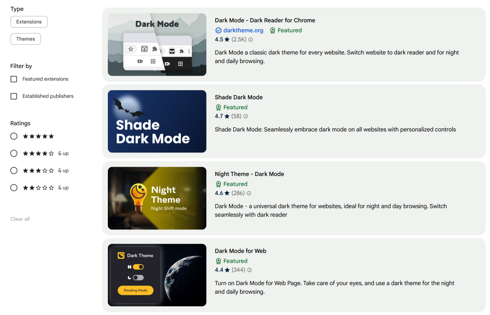
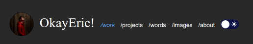
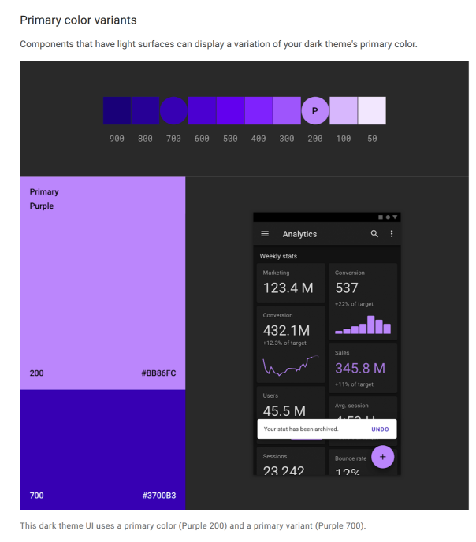
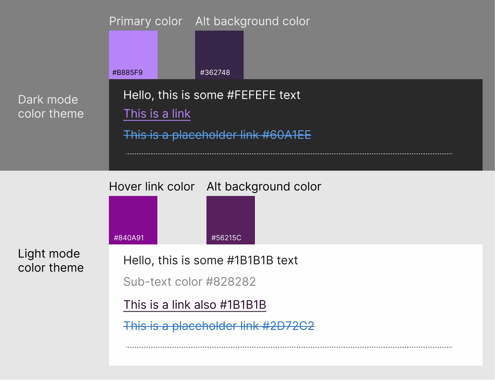
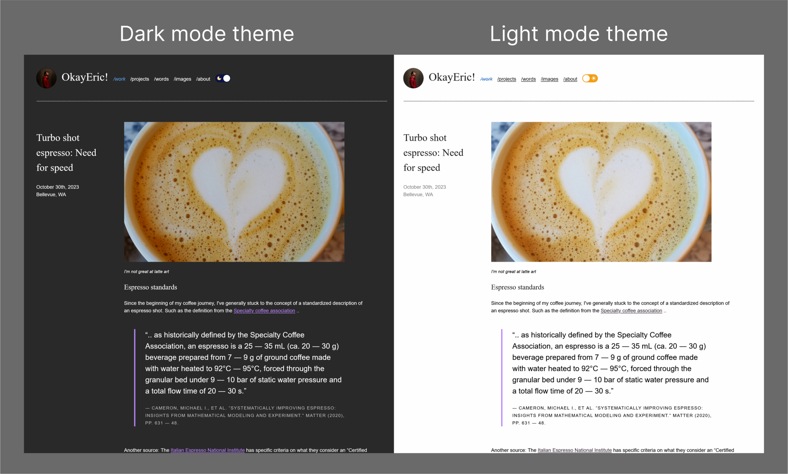
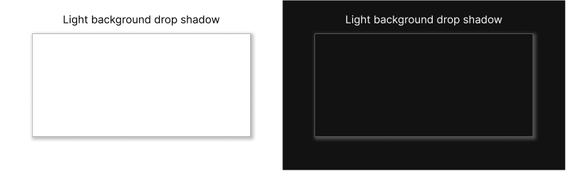

Dark mode: the other side of the UI
January 6th, 2024
Bellevue, WA
Photo by Ben Collins on Unsplash Edited by me for dramatic effect.
Hello darkness, my old friend...
For best reading experince, try this in dark mode!!!
Seriously though, there are too many times at night or in a low lit environment where I wanted to open up a webpage on my phone and the website is glaringly bright burn-through-your-retinas bright. Thank goodness for the wave of darkmode websites and mobile OS level settings that were all the rage the last few years. I think it's very cool to use darkmode as a way for users to have some customized control over their web experience, both in the browser and at the app/platform level.
There are a lot of 3rd party browser extensions that one could install to force that experience on to web pages that don't have dark mode enabled. This is a nice option, but requires the user to install an extention for each of the browser they experience the web through. There really isn't much choice sometimes.
Part 1: Implementation, the how?
What I've decided to do was to add dark mode to this website, but without the user having to toggle on/off their desired experience each time
they land here. (Not saying that I have that many repeat readers, so mostly for my own benefit.) The idea was to use windows.localStorage to save
the preference for beyond the session. (That would be using sessionStorage which would wipe clean once they close the tab/window.)
First things first, we'll create a button to toggle between the modes. I've added into my header a simple button that will toggle between a sun icon and a moon icon to indicate the two modes.
<input type="checkbox" class="checkbox" id="checkbox">
<label for="checkbox" class="checkbox-label">
<i class="material-icons moon" style="font-size: 16px;">dark_mode</i>
<i class="material-icons sun" style="font-size: 16px;">light_mode</i>
<span class="ball"></span>
</label>
This creates a nice little toggle like this...
Then we have to have a trigger for when the checkbox element is click we can move the ball to give that toggle animation effect
.checkbox-label {
background-color: #f39c12;
width: 40px;
height: 16px;
border-radius: 50px;
position: relative;
padding: 5px;
cursor: pointer;
display: flex;
justify-content: space-between;
align-items: center;
}
.moon {
color: #FFE992; /* add some color for the moon. */
}
.sun {
color: #fff; /* add some color for the sun. */
}
.checkbox-label .ball {
background-color: #fff;
width: 22px;
height: 22px;
position: absolute;
left: 2px;
top: 2px;
border-radius: 50%;
transition: transform 0.2s linear;
}
/* here's the magic when checkbox is checked, this will move/transform the ball */
.checkbox:checked+.checkbox-label .ball {
transform: translateX(24px);
}
Once we have that set up the next thing will be to set up some Javascript to allow us to implement dark mode or switch back to light mode.
The idea here is that when the toggle is activated ("clicked on") it will prompt the code to add an extra CSS class ("dark") to the Body element.
We'll use this CSS class to then override the normal CSS "light mode" styling with a set of custom "dark mode" colors and styles.
The other thing we will want to implment is was concept we had earlier for have windows.localStorage to save values beyond the individual page.
<script>
const toggleBtn = document.getElementById("checkbox");
let darkMode = localStorage.getItem("dark-mode");
const enableDarkMode = () => {
document.body.classList.add("dark");
localStorage.setItem("dark-mode", "dark");
};
const disableDarkMode = () => {
document.body.classList.remove("dark");
localStorage.setItem("dark-mode", "light");
};
if (darkMode === "dark") {
enableDarkMode(); // set state of darkMode on page load
} else {
disableDarkMode(); // start with light mode
}
toggleBtn.addEventListener("click", (e) => {
darkMode = localStorage.getItem("dark-mode"); // update darkMode when clicked
if (darkMode === "light") {
enableDarkMode();
} else {
disableDarkMode();
}
});
</script>
To be honest, I'm still having some issues with this, maybe i'll figure it out later. The on load state of the toggle sometimes is reversed. It'll be in light mode but the icon is the moon. and then clicking on it will turn to dark mode, but the icon will be the sun. I'll leave it for Future-Eric™ to solve that problem.
You can see here that the "sun" is dark...and when you click on it, the moon is bright.
Future-Eric™ here!
I've fixed the problem. The issue was that when the localStorage was set to dark and the page was refreshed, the default
position for the label is "light mode". So what I've added was when the page loads and it's checking if localStorage is dark it'll also check the
#checkbox automatically to set it to the correct toggle position.
document.getElementById("checkbox").checked = true;
and
document.getElementById("checkbox").checked = false;
if it's light mode just to make sure the checkbox is unchecked and toggle in the light mode position.
Part 2: Designing a dark mode experience
So now we have a cool toggle button, we still need to decide what dark mode how will actually look and feel. I'm more use to designing for white backgrounds and the required amount of contrast from the fonts and colors. But how different will dark mode alterantive be?
Material Design dark theme. Google has a lot of documentation they set up for working with dark themes in Android.
For example, the background color that is recommended is dark grey #121212. This is because dark grey is less contrasty than black and is better for less eye strain.
White/light color text on dark grey is a bit more readable.
Material Design dark theme. Google suggestion on how to create and design dark mode color themes.
Another point from Material design, is the use of the theme primary color. In light mode / light backgrounds, there is a case to use the primary color more frequently. But in the world of dark mode, the suggestion is to use color more sparingly, a bit more of a desaturated theme rather than just inverted light theme.
What I ended up with for my color themes are ..
I'm sure this will change over time, I'm always adjusting and changing things as I add or remove new stuff to this website.
Here the side by side for my dark mode theme and light mode theme.
Part 3: Other considerations for working with dark mode
- Operating system level dark mode
- Other ways to store user preferences
- Darkend dark images
- Dark mode shadows
- Browser User Agent theme
Something you can add to your code is to align with system level dark/light mode settings. To do this we'll be working with the prefers-color-scheme CSS custom property.
You can have it at either no preference, light, or dark. The place to apply this is in your CSS media queries (this is activated by the state of your
viewport/screen). In this case, we'll be looking for any system level light/dark mode settings.
/* For example, if you have this code.. */
@media (prefers-color-scheme: dark) {
body {
color: #eee;
background: #121212;
}
a {
color: #809fff;
}
}
/* When the system is set to dark mode, the browser settings will also be set to dark mode. */
The two main ways that I've researched for storing user preferences for websites are to either use
localStorage or cookies (with a server side language).
I've opted to use the localStorage as I didn't want to get into optimizing cookies and working with PHP.
I'm not very familiar with PHP and other server side languages, but for those who want to find out more check out this section of the CSS-tricks: a complete guide to dark mode on the web.
Something to consider when switching over to dark mode is to think about how images look in dark mode. We have made
changes to the text and background colors, but images can be still very bright and harsh on the eyes in a dark
envrionment.
Something that can be suggested it to lower the brightness of the image, but slight up the contrast to retain the
details. From the CSS-tricks: a complete
guide to dark mode on the web,
I've used their suggestion to add an css filter: brightness (.8) contrast (1.2) to my images to adjust
for a dark viewing environment.
body.dark img {
filter: brightness(.8) contrast(1.2);
}
Adjusting the brightness and contrast to keep the image from being too bright for viewing in dark mode
Something that is suggested is to also consider the shadows used in light mode and dark mode. My website doesn't really use shadows so this probably won't be something I'll add, but the idea is that it doesn't look good inverted. Instead of using shadows, try changing the background color of the components so that there is a dept effect, where lighter elements "float" to the top and darker elements are "lower".
Light shadow looks strange on dark backgrounds. We're more use to seeing shadows as additional darkness not light.
When you are working with default browser ui, such as buttons, scroll bars and checkboxes, you can also adjust this over to match the mode your page is in.
Using the color-scheme css attribute, you can set the system colors to dark, light, only dark and only light.
Note that only dark and only light are not supported across many browsers (I think only iOS Safari and desktop Safari support it currently.) Check out
css-tricks: CSS Almanac → Properties → C → color-scheme for more about color scheme.
color-scheme: normal;
color-scheme: light;
color-scheme: dark;
color-scheme: light dark;
color-scheme: dark light;
color-scheme: only light;
color-scheme: only dark;
Conclusion: Dark learnings
Adding in a dark theme mode, even if its to just match the system prefereces is not hard, but it can have very visible impact on user experience on the website. I've had many times where I open my web page to show friends only to be blasted by light in a darker environment. (This may be due to how dark and gloomy it is here in the pacific northwest in the winter time.) But getting to back to the topic at hand, dark mode really adds another layer of thinking to how you might approach varible experiences for web. Regardless of the reason, there are considerations for colors, fonts, layouts, and even how images sit on different background colors. This was a good exercies for me to really think about even how I appraoch these factors in light mode. I hope you also consider the learnings and maybe add a dark mode option for your website.
References
- CSS-tricks: a complete guide to dark mode on the web, this was about 90% of where I learned about dark mode, can't get any better than this. Great resource.
- Chrome web store: Dark mode apps This was used just to get a sense of what types of dark mode apps and UIs were out there.
- Material Design dark theme. This was the other 10% of my resources for learning dark mode. The materials design team really put some good thought into how to standarize dark mode systematically.
- Of course this wouldn't be a coding experiment from me with out...StackOverflow!